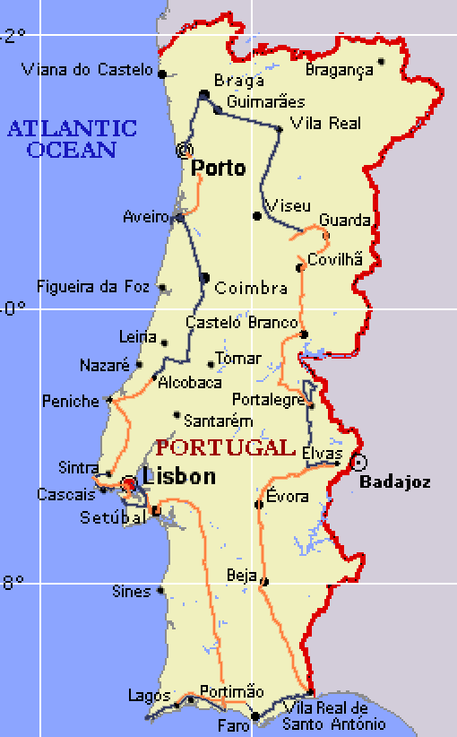

Torre de Belem Belem Cabo de Roca Sintra Estoril Guincho Peniche Obidos kamp Fatima Aveiro Porto Bom Jesus Braga Guimaraes Linhares Celorico da Beira Castelo Branco Marvao Elvas Evora Almendres Pisoes Lagos St. Vicente Albufeira Lizbona
|
1. dan (sobota 6.7.2002): let iz Trsta preko Rima v Lizbono, prenočimo v kampu pri plaži Costa da Caparica južno od Lizbone
2. dan (nedelja 7.7.2002): Lizbona (Belem), Cabo da Roca, Guincho
3. dan (ponedeljek 8.7.2002): Sintra, Cascais, Estoril, ponovno prespimo v kampu pri Guinchi
4. dan (torek 9.7.2002): Peniche, Obidos, Alcobaca
5. dan (sreda 10.7.2002): Bathala, Fatima, Coimbra, Aveiro
6. dan (četrtek 11.7.2002): Porto
7. dan (petek 12.7.2002): Braga, Guimaraes, Celorico da Beira
8. dan (sobota 13.7.2002): Linhares, Guarda, Covilha, Penhas da Sauede, Castelo Branco, Portalegre
9. dan (nedelja 14.7.2002): Castelo de Vide, Marvao, Vila Vicosa, Elvas
10. dan (ponedeljek 15.7.2002): Evora, Beja (Pisoes), Vila Real de Santo Antonio
11. dan (torek 16.7.2002): Faro, Quarteira
12. dan (sreda 17.7.2002): Lagos
13. dan (četrtek 18.7.2002): Sagres, Cabo de S. Vicente, Albufeira
14. dan (petek 19.7.2002): Setubal, Lizbona
15. dan (sobota 20.7.2002): Lizbona -> Milan -> Trst
|
 |